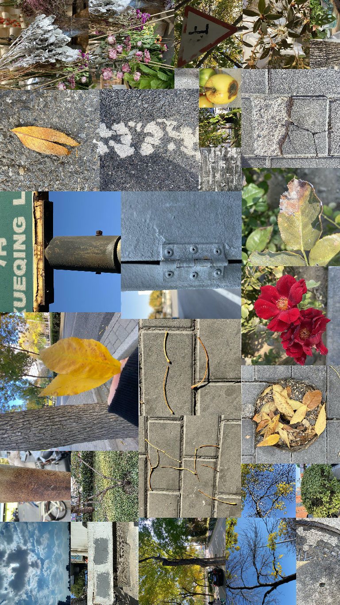
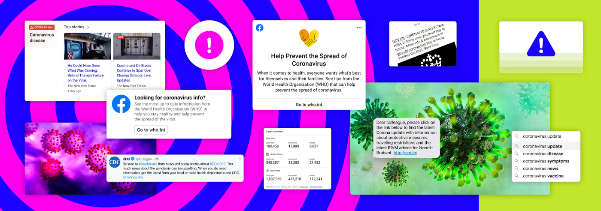

Personal Statement
I graduated from Miami University this year, majoring in interactive media studies. Instead of saying interactive, my major is more concentrated on media studies. However, I know media study is not the path I want to take in the future. I
want to dive into the "interaction", the interaction between human and human, human and technology, and human and society. Experts have suggested that the average person thinks 60,000 to 80,000 thoughts every day, which equals 2,500 to
3,000 every hour. Some of these are just passing thoughts that disappear quickly, and perhaps people don't even acknowledge them. I want to use the design tools to catch those ideas and make them come alive. Unlike other students who have a
computer/design background, my design foundation is relatively weak. So, I want to concentrate on critical thinking about the design and transforming it into a design project.
The direction I want to approach is to use design as a medium to create an emotional link between each individual, to create a sense of empathy. Everyone is an independent individual; It is challenging to create an emotional link
between them without any medium. From this perspective, I want to use my design as a medium/tool to arouse some emotional connections between individuals. I was in the news that happened recently in China. A graduate student of the Dalian
University of Technology chose to commit suicide a week ago. The last straw that overwhelmed him was the heavy graduation pressure. This incident brought me a sense of empathy. At the same time, it also triggered my thinking. There are
still many such things happening in society every day. If we have the opportunity to understand what they experience, whether we can avoid these things in the future? I believe that many people in the world are experiencing emotional
fluctuations like him. I want to help them out, create a kind of emotional connection with them through my work, and let more people understand them. The more we understand them, the more likely we are able to help people who are
experiencing the same pain as him in the future.
My target audience will be the people who are experiencing emotional pain; I want to provide them some new ways to help them adjust and release emotions. At the same time, I want to use my work to infect people with the same experience,
create an emotional link between them, and evoke social empathy.
I was inspired by the artist called Doris Salcedo; Salcedo's work gives form to pain, trauma, and loss while creating a sense of empathy. Even though you don't know about her experience, you can feel her work. The quality Doris Salcedo
has inspired me is how she uses her design to build an emotional bridge between the designer and audiences. She tries to use an artistic form to construct her work. I want to use a design form in my work to create an interactive medium to
develop the concept of empathy.
My final goal here is to create a series of personal characteristics and develop them into a system. I want to become a designer, not a tool for design.
works.
7 in 7 Day 1-disappearable post-it
Guiding Questions
Dose the people who are experiencing frustration/depression willing to show their emotions to other people?
Is there anyway to help them release their emotions?
Brainstorming
Everyone will face lots setbacks, pressures and difficulties in life. Lots of people will bury these pressures under their hearts.
However, hiding it is not a good choice that this kind of emotion will accumulate and eventually develop into depression. What we need to do is get bad emotions/things
out of the chest and release the emotion stuck in your body. Emotions need to be expressed to be processed.
One of the best forms of emotional healing—write it down. When we write, we give a voice to the inner world. We deal with and understand what is happening inside and around us.
We gain perspective; by writing about our fears and hurts, we can look at them from a distance, get rid of them, and finally let go of them.
Writing can be a good form.
The idea
I am trying to find a way to let people express their emotions anytime without any limitation. I think the Post-it can be a suitable medium because it is easy to carry and use.I want to make a transparent and disappearable post-it.Disappearable is my main concept idea for this project. The reason why I think this post-it sticker should be disappearable because I hope the people who are using this sticker can get over their bad emotions and let is disappear. Also I believe the people who wants to use sticker don't want other people to notice their post-it sticker, so this function can help can let them release their emotions more freely. want this to be last for a long time that In this way, the people can be used anywhere without being noticed.
I will find some unique materials for the post-it to make sure it will not destroy the environment as well be able to disappear in a few days. I think the material like glutinous rice paper can be a good example. My goal here is to use the concept of "post-it" to create an emotional connection with the people in "bad mood" and provide them with a way to express their feelings.
prototype


Further development(maybe)
Not all people under depression want to hide their emotions; some people like to seek help from others but afraid to do so.
For the further development of this idea, I think I can create a post-it responding system for those people who are under depression.
For people with depression, what they need most is not an immediate solution to the problem,
but create a connection with their emotions. They need to find a way to talk with other people
The people who post this "post-it" sticker can be the anonymous initiator, and people who have a chance to look at their post can be the emotional responder.
This can be a different idea from the original one that it creates a new way of interaction. This is just a brief thought.
To-do list
1. try to use the glutinous rice paper to create a post-it to test, to see whether it can be the medium of this work or not.
UPDATE:

 glutinous rice paper actually works and It will disappear when it touches water.It's not bad but I need to figure out how to make it more sticky.
2. try to think more about the further development, how to make the interactive circle.
glutinous rice paper actually works and It will disappear when it touches water.It's not bad but I need to figure out how to make it more sticky.
2. try to think more about the further development, how to make the interactive circle.
7 in 7 Day 2
Guidng Questions
Can we use our emotions tell a story?
How can we create memories?
Inspiration
Sound Story.This design shows storytelling tool that provide children creative experience to create a story with sounds. I am wondering can I use this way to create a mood recorder tool to help people tells their daily stories?
idea
I think every day is worth recording. Even a tiny thing may become a good memory in the future. Writing a diary has become a luxury for most of people today. People don’t have time to sit at the table, write something about their daily lifes . So I wonder if we can make people record their daily moods in an interactive way, asking themselves a question every day. Transform everyday life into a memorable story. Memories are wonderful. I hope that when people are depressed, they can find good memories of the past.Prototyping
AEIOU
Activities: recoring
Enviroment: home
interaction:Taking, playing, sitting, reflcting
objects: table, chairs, mood boxes, smartphones, food/drink, music
User: People who like to record their life, and create beautiful memories.
There are several kind of box that represent the elements can be recorded. For the mood box, you can choose your mood for that day put into the hole, and the app will automaticlly record it.
For the music box, you can insert it and play, the system will change music everyday that you will have different choices for each day.
For the weather box, you can simply chose the weather for that day.
For the question box, you just need to roll a dice and put the box into the hole, and the app will tell you what question you need to answer for today, and once you plug the box into the machine the recoding function will automatic
start to record and send it to the app.
Your answer for each day will become your memory story.
The biggest problem here is how to make it look like a story. I am thinking right now is after a week, the app will combine your everyday answers together and make it a story.
tools: arduino, mobile phone app, boxes(wooden?), recorder
To do
app prototype, user testing prototype.7 in 7 Day 3
Guiding Questions
How to help people with depression get to know themselves better？
Inspiration
A post-90s photographer took pictures of girls trapped in depression for free and try to recorded their stories. Every girl is beautiful and unique. They just didn't realize it.
Brainstorming

By analyzing the reasons behind depression, I found that many depression patients tend to be perfectionists. No matter what achievements they have achieved, they still feel that they are not good enough and worry that their
imperfections will cause others trouble.
But...nothing is perfect. I want a find a way to help them realize that they can be imperfect because the world is imperfect.
The development
To find inspirations, I started to go out and try to observe some interesting stuff near my home; I found a lot of defective items, such as spotted leaves, rusty road signs, cracked stones, wilted flowers...
I took many images of them, and then I just realized these deficiencies actually make them unique. These are the things we can see every day, but we have never had a chance to look at them and find out the beauty of them. Our world is made up by imperfections.
prototype
When I passed by the glass door, an idea ran into my mind. I want to make an interactive glass screen that when people walk by, there will be images and texts coming out.
Give them an opportunity to communicate with themselves and let them re-examine themselves in an interactive way. I want to use this way to encourage them and tell them, "You can be imperfect". Because of the technical problem, I only make a video prototype here to show my idea's simple process.
7 in 7 Day 4
Guiding Questions
Do objects have emotions？
Can we define emotions for them?
Inspiration
I called my mom yesterday night because I didn't call her for a long time. I noticed that her voices sound so excited. I can feel her emotion through her voice. After that phone call, I am starting to question whether the emotion is a characteristic that belongs only to humans/animals? Can inanimate objects have emotions？
Brainstorming/research
I started to look at the objects on my table, and play with them. I found out that each objects have special sounds.Although some objects are in same status(solid/liquid), they all make different sounds.The property of sound determines pitch.
Different frequency of the sounds can bring us different kinds of feeling. So we can use sounds frequncy to identity the object's emotion.
High frequency：
The sound amplitude of this frequency affects the expressiveness of the tone. If the overtone amplitude of this frequency band is relatively full, then the sound resolution will be very good.
Mid-high frequency：
It affects the coolness (coldness) of the sound. If the tone component of this frequency is too little, the tone will become warmer; if the component of this frequency is too much, the tone will become cold.
Mid-low frequency：
If the tone of this frequency band is fuller, the tone will become more round and powerful. If the tone this frequency band is lacking, the sound will become weak, empty, and divergent.
Low frequency：
If the tone component of this frequency is fuller, the sound will become majestic and have a sense of space. If the component of this frequency is lacking, the tone will become pale, thin, cold, weak, and weak.

The development
I recorded the sounds of different objects on my table, use frequency wave to represent the characteristic of that object.Sound frequency wave:


Every frequency wave is unique, so I want to define a frequency range, and when I input the sounds of the object, the computer will identify the emotion for that object.
prototype
I don't have the arduino with me right now, but I did some research on it.


This is a Audio Analyzer which can The audio signal will be filtered into 7 bands through this module. And it will output the amplitude of each frequency band.
To-do list
I have the basic idea right now and I want to try out the arudino code to see whether it works or not.
7 in 7 Day 5
Guiding Questions
How information information explosion affects our lives?
Inspiration
In recent years, the flood of information has become a normal situation. The days of morning paper and night news are long gone. Information updates have penetrated every second and every inch of our lives.The flood of information is like the arrival of zombies—We have tens of email everyday and hudreds of news and app notifications. Our brains are wounded unconsciously. Our body responds to overwhelming stimuli by releasing stress hormones, we keep receiving explosion information everyday,the reaction will continue, leading to long-term anxiety and stress.
The influx of information hasn't given our bodies and brains enough time to reset. We live in a world where information is advancing and exploding rapidly.

Brainstorming
Social information software is creating information all the time! Such an environment is simply overwhelming us. We are highly anxious about information. We are always worried about "others know but I don't know". We force ourselves to read a lot of information every day. But as we continue to receive this information, we are overwhelmed by a piece of information.I want to transform this situation into a VR Scenes, create a atmosphere where people can more directly receive the anxiety caused by information explosion.prototype
This is the video effect that I want to make for vr scenes and we can see that when all the information comes to you, you will fell very anxious.
To-do list
Actually, I don't have any AR experience, so I want to learn some ar technique and help me to delveop my ideas.